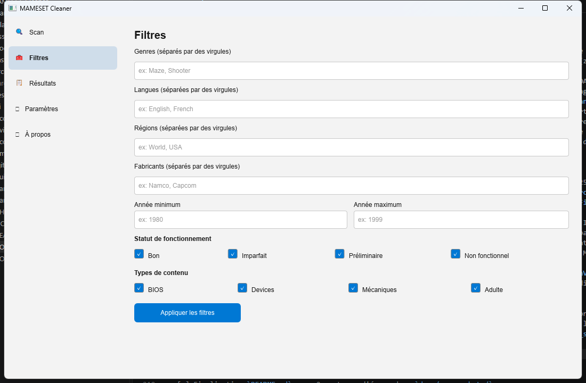
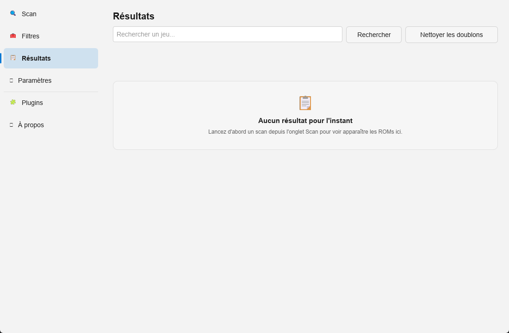

Overview
MAMESET Cleaner is a Windows desktop application that helps clean and organize a MAME ROM set. It detects and removes duplicates (clones/parents) using the 1G1R logic (1 game = 1 ROM), filters by genre, language, region, working status, manufacturer and year, and relies on the official MAME reference files (DAT, catver.ini, languages.ini) for a reliable result.
Features
Smart scan
Analyzes the ROM folder (.zip, .7z, uncompressed folders) and detects files that are correct, missing, corrupted, or unreferenced.
Duplicate detection
Automatically picks the best copy of each game based on a customizable region priority and working status.
Advanced filters
Genre, language, region, status, manufacturer, year, BIOS, mechanical, adult content: combine your criteria freely.
Safe cleanup
Windows Recycle Bin by default, optional backup beforehand, and mandatory confirmation before any deletion.
Detailed reports
Every cleanup generates a JSON and CSV report listing deleted and kept ROMs, with their reason.
Clean interface
French and English, light or dark theme, built entirely in native Rust to stay fast on very large sets.
Screenshots


Installation
Download the latest installer from the
Releases page, then run
MAMESET-Cleaner-Setup-vX.Y.Z.exe.
Requirements: Windows 10 or Windows 11 (64-bit).
License
MAMESET Cleaner is distributed under the MIT license.